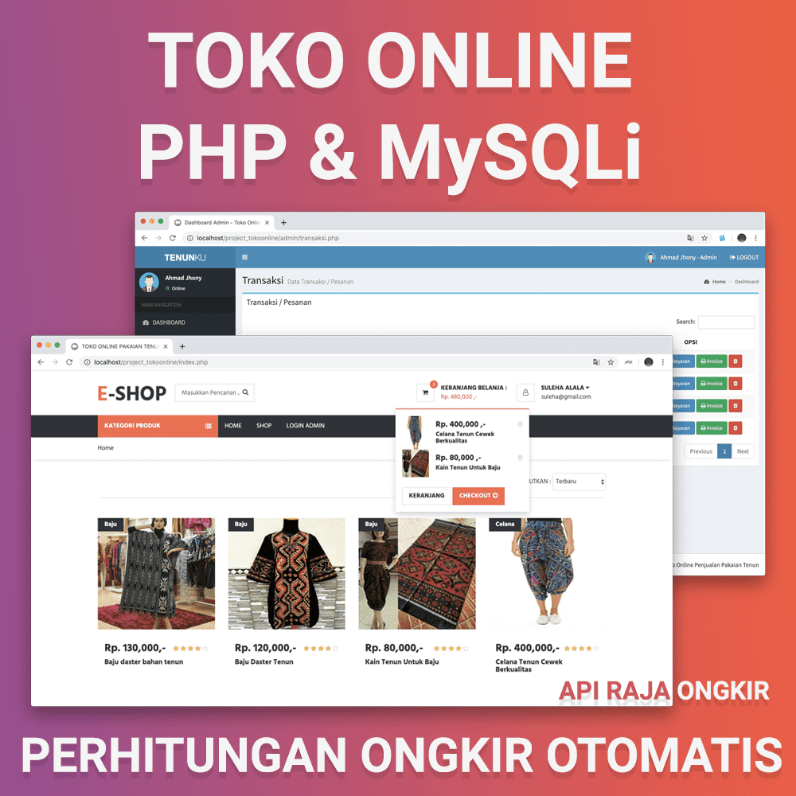
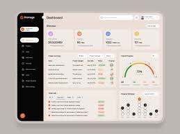

Tentang Saya
Halo! Saya Ariyadi, seorang Web Developer yang berfokus pada pembuatan website modern, responsif, dan ramah pengguna. Saya juga tertarik dengan desain UI/UX yang estetik dan fungsional.
Keterampilan
HTML5 & CSS3
JavaScript (ES6+)
React & Tailwind
Node.js
MySQL
Python
Proyek Terbaru
Website Portofolio
Membangun website portofolio pribadi dengan GitHub Pages.

Aplikasi Toko Online
E-commerce fullstack dengan React & Node.js.

Dashboard Admin
Dashboard interaktif dengan Chart.js & Tailwind.
Kontak
Email: admin@ariyadi.eu.org
LinkedIn: linkedin.com/in/username
GitHub: github.com/ariyadimunur